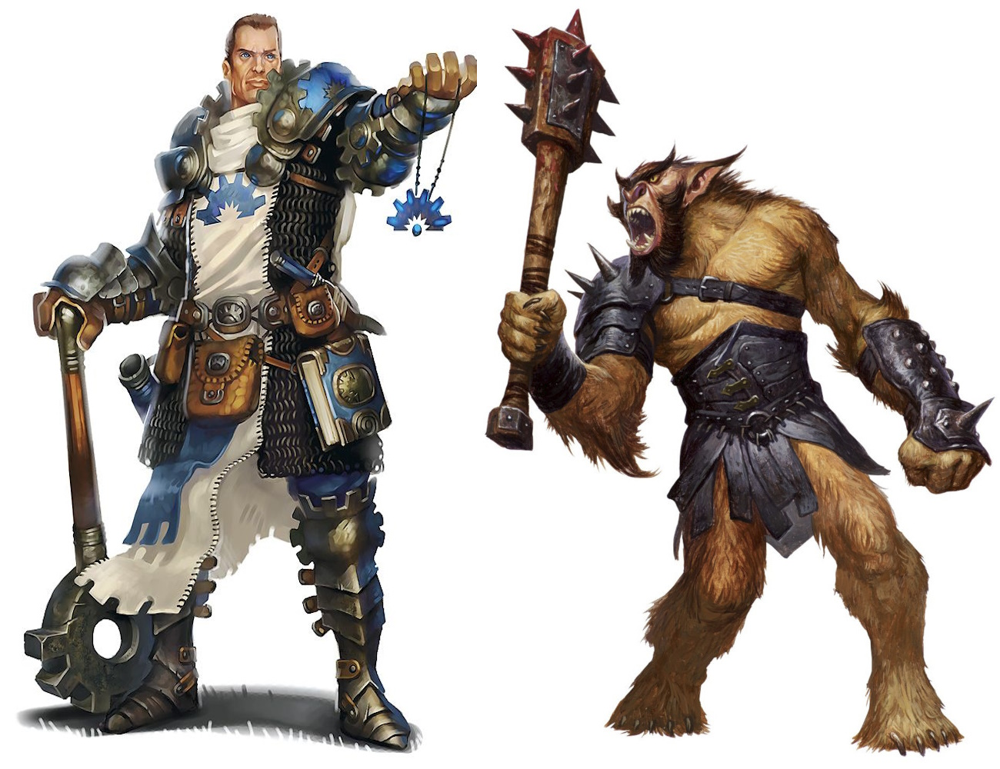

Kotlin Aventure
Kotlin Aventure est un jeu de rôle développé en Kotlin sous forme d'application console. Il met en œuvre les principes de la programmation orientée objet. Le joueur explore un univers composé de plusieurs pièces connectées, peut interagir avec des objets et progresser à travers des événements conditionnels. Ce projet a été réalisé en groupe dans le cadre de l’apprentissage de Kotlin et de la structuration orientée objet.
- Fonctionnalités clés : Navigation entre pièces, inventaire, lecture de commandes en ligne de commande
- Technologies utilisées : Kotlin, IntelliJ, paradigme objet
- Compétences développées : POO, logique de jeu, structuration de classes, modélisation UML, interface en ligne de commande
